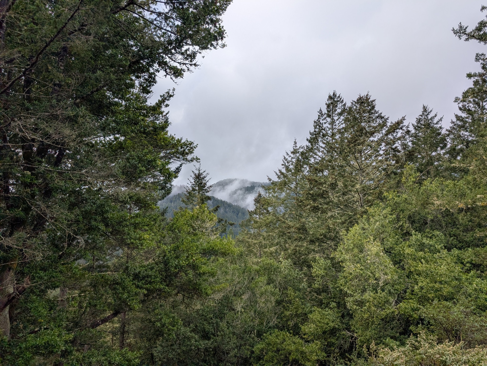

FAQ / Вопросы
Часто задаваемые вопросы
О программе
Лесная школа — это программа под открытым небом, где дети учатся через игру, исследование и практический опыт на природе. Сама природа становится для них классом.
Лесная школа «Тайга» собирается в Golden Gate Park. Точки сбора в парке могут меняться, чтобы дети могли исследовать разные природные зоны. Семьи получают предварительное уведомление о точном месте встречи на каждый день. При этом высадка и забирание детей (drop-off and pick-up) происходят в одном и том же месте.
Наша программа рассчитана на детей от 2 лет.
Наша программа сочетает в себе:
- природный подход с ежедневными исследованиями в Golden Gate Park
- двуязычную русско-английскую среду
- небольшие группы и доверительные отношения с преподавателями
Мы создаем русскоязычную среду, где дети могут чувствовать себя как дома, но при этом они естественным образом погружаются в английский язык через повседневную активность и окружающее сообщество. Это мягко и естественно поддерживает их двуязычное развитие.
Программа длится с 9:00 до 13:00. Мы следуем предсказуемому ритму дня, чтобы дети чувствовали себя безопасно и комфортно. Мероприятия включают: утренний круг, исследование природы, перекус, групповые активности (например, поход, игры с водой, изучение лесной зоны), свободную игру, обед и заключительную активность.
Природа и занятия на улице
Да. Игры и исследования на свежем воздухе — это основа нашей философии. Дети получают огромную физическую, эмоциональную и когнитивную пользу, проводя время на природе.
Мы следуем философии лесной школы: «Нет плохой погоды, есть неподходящая одежда». В правильной непромокаемой одежде дети продолжают исследовать мир и играть на улице даже в небольшой дождь.
Во время сильной непогоды (шторм или сильный ветер) мы можем проводить время в укрытых зонах парка или иногда устраивать музейные дни, посещая такие места, как Калифорнийская академия наук (California Academy of Sciences) или Музей Рэндалла (Randall Museum).
Во время сильной непогоды (шторм или сильный ветер) мы можем проводить время в укрытых зонах парка или иногда устраивать музейные дни, посещая такие места, как Калифорнийская академия наук (California Academy of Sciences) или Музей Рэндалла (Randall Museum).
Погода в Сан-Франциско в целом мягкая. Дети остаются в комфорте благодаря правильной многослойной одежде и активным играм. Движение помогает им регулировать температуру тела.
Преподаватели также внимательно следят за комфортом и самочувствием детей, помогая им одеться теплее или снять лишний слой при необходимости. Дети постепенно учатся замечать сигналы собственного тела и говорить, когда им холодно или жарко.
Преподаватели также внимательно следят за комфортом и самочувствием детей, помогая им одеться теплее или снять лишний слой при необходимости. Дети постепенно учатся замечать сигналы собственного тела и говорить, когда им холодно или жарко.
Golden Gate Park — это в целом безопасная среда для исследований на свежем воздухе. Дети могут иногда встречаться с такими насекомыми, как пчелы, муравьи или комары, которые являются естественной частью экосистемы парка.
Наши учителя хорошо знакомы с местными растениями и потенциальными рисками; они визуально осматривают территорию перед началом занятий. В течение дня преподаватели остаются внимательными, обучая детей безопасному и уважительному исследованию природы.
Наши учителя хорошо знакомы с местными растениями и потенциальными рисками; они визуально осматривают территорию перед началом занятий. В течение дня преподаватели остаются внимательными, обучая детей безопасному и уважительному исследованию природы.
Здоровье и безопасность
Да. Безопасность — наш главный приоритет. В программах поддерживается низкое соотношение числа преподавателей и детей, установлены четкие границы безопасности, и дети находятся под постоянным наблюдением, при этом сохраняя возможность исследовать мир и развивать самостоятельность. В большом парке, таком как Golden Gate Park, группа остается в соответствующих возрасту тщательно выбранных зонах.
Мы поддерживаем небольшие группы с соотношением один учитель на четверых детей (1:4), чтобы гарантировать безопасность, внимательное наблюдение и индивидуальный подход.
Да. Преподаватели прошли обучение и имеют сертификаты по сердечно-легочной реанимации для детей (Pediatric CPR) и оказанию первой помощи (First Aid).
Активные игры на свежем воздухе иногда приводят к небольшим синякам или царапинам. У учителей всегда с собой аптечка первой помощи. Мелкие травмы обрабатываются сразу же, и при необходимости мы информируем родителей.
В маловероятном случае серьезной травмы мы немедленно звоним родителям и в службу экстренной помощи и оказываем первую помощь до прибытия медиков. Безопасность и благополучие детей всегда являются нашим приоритетом.
В маловероятном случае серьезной травмы мы немедленно звоним родителям и в службу экстренной помощи и оказываем первую помощь до прибытия медиков. Безопасность и благополучие детей всегда являются нашим приоритетом.
Учителя берут с собой переносной горшок и средства гигиены, чтобы дети могли с комфортом сходить в туалет в приватном месте. При возможности используются туалеты в парке. Мы тщательно соблюдаем правила гигиены, включая обязательное мытье и очищение рук.
Нет, для посещения школы ребенку не обязательно быть полностью приученным к горшку. Учителя мягко поддерживают процесс приучения и поощряют самостоятельность в комфортном для каждого ребенка темпе.
Если ребенку требуется смена подгузника или одежды, преподаватели уважительно помогают, соблюдая правила гигиены, используя влажные салфетки и помогая детям переодеться в чистую одежду по мере необходимости.
Если ребенку требуется смена подгузника или одежды, преподаватели уважительно помогают, соблюдая правила гигиены, используя влажные салфетки и помогая детям переодеться в чистую одежду по мере необходимости.
Одежда и подготовка
Дети должны приходить одетыми для игр на открытом воздухе в любую погоду. Лучше всего работает система слоев: так ребенок сможет чувствовать себя комфортно при изменении температур. Мы рекомендуем прочную обувь или ботинки, одежду по погоде и, при необходимости, защиту от солнца.
Одежда может испачкаться или промокнуть — это естественная часть исследования природы. Пожалуйста, всегда давайте ребенку с собой запасную одежду. Наша программа придерживается девиза: «Нет плохой погоды, есть неподходящая одежда».
Подробные рекомендации можно найти в нашем Руководстве по одежде (Outdoor Clothing Guide).
Одежда может испачкаться или промокнуть — это естественная часть исследования природы. Пожалуйста, всегда давайте ребенку с собой запасную одежду. Наша программа придерживается девиза: «Нет плохой погоды, есть неподходящая одежда».
Подробные рекомендации можно найти в нашем Руководстве по одежде (Outdoor Clothing Guide).
- Бутылка для воды
- Еда для перекуса (snack) и обеда (lunch)
- Запасная одежда
- Экипировка по погоде
Обучение и развитие
Дети учатся через прямой контакт с миром природы. Исследуя парк, они развивают речевые и коммуникативные навыки, социальное понимание, креативность, умение решать задачи, физическую координацию и растущую самостоятельность.
Наш подход делает упор на обучение на практике, любознательность, здоровый риск и связь с природой, помогая детям развивать уверенность в себе, устойчивость и любовь к познанию на всю жизнь.
Наш подход делает упор на обучение на практике, любознательность, здоровый риск и связь с природой, помогая детям развивать уверенность в себе, устойчивость и любовь к познанию на всю жизнь.
Да. В процессе исследований дети естественным образом развивают ранние математические, речевые, научные и аналитические навыки. Исследования показывают, что обучение на свежем воздухе усиливает внимание, креативность и исполнительные функции.
Регулярные игры на воздухе всесторонне поддерживают развитие детей, включая:
Время, проведенное на природе, напрямую связано с улучшением когнитивного развития и ментального здоровья детей.
Узнайте больше об исследованиях в области природного образования на нашей странице «Исследования и доказательства».
- Внимание и концентрацию
- Физическое здоровье
- Креативность
- Эмоциональную регуляцию
- Психологическую устойчивость
Время, проведенное на природе, напрямую связано с улучшением когнитивного развития и ментального здоровья детей.
Узнайте больше об исследованиях в области природного образования на нашей странице «Исследования и доказательства».
Да. Наша программа формирует базовые навыки, необходимые для учебы: коммуникацию, умение работать в команде, эмоциональную регуляцию, любознательность и независимость. Эти навыки позволяют детям потом уверенно переходить в традиционную школьную среду.
Адаптация и поведение
Это совершенно нормально, что маленьким детям нужно время для адаптации. Преподаватели поддерживают детей через мягкие переходы, помогая выстроить доверие и чувство безопасности.
Семьи могут оставаться с ребенком во время переходного периода и участвовать в программе, пока малыш не освоится. Мы также можем предложить визиты "один на один", чтобы ребенок познакомился с преподавателями и обстановкой до того, как присоединится к основной группе.
При должной последовательности, терпении и теплом отношении абсолютное большинство детей начинают чувствовать себя уверенно и получают удовольствие от игр с группой.
Семьи могут оставаться с ребенком во время переходного периода и участвовать в программе, пока малыш не освоится. Мы также можем предложить визиты "один на один", чтобы ребенок познакомился с преподавателями и обстановкой до того, как присоединится к основной группе.
При должной последовательности, терпении и теплом отношении абсолютное большинство детей начинают чувствовать себя уверенно и получают удовольствие от игр с группой.
Лесные школы — это очень поддерживающая среда. Учителя мягко направляют детей в игру, поощряют взаимодействие со сверстниками и уважают темп каждого ребенка. Многие застенчивые дети здесь раскрываются, так как игры на открытом воздухе снижают давление и стресс.
Испачкаться — естественная часть детства и обучения. Игра с песком, листьями, водой и грязью развивает сенсорику и творчество. Если ребенок изначально не любит пачкаться, это тоже совершенно нормально! Дети исследуют мир в своем комфортном темпе. Мы поддерживаем базовые процедуры гигиены, включая мытье рук. Обязательно приносите запасную одежду!
Уличная среда идеальна для активных детей. Движение, исследование и практическое обучение позволяют детям направить свою энергию в позитивное русло.
Преподаватели устанавливают четкие границы и обеспечивают пристальное наблюдение, помогая детям оставаться вовлеченными и безопасно исследовать среду, свободно передвигаясь.
Преподаватели устанавливают четкие границы и обеспечивают пристальное наблюдение, помогая детям оставаться вовлеченными и безопасно исследовать среду, свободно передвигаясь.
Дети адаптируются очень быстро. Учителя аккуратно познакомят ребенка с окружающим миром, помогая ему стать увереннее и развить любознательность.
Преподаватели оказывают эмоциональную поддержку, поощряя самостоятельность исключительно в комфортном для ребенка темпе. По мере исследования территории большинство детей постепенно становятся более уверенными.
Оформление и детали
Вы можете связаться с нами через наш сайт или электронную почту, чтобы запланировать беседу и узнать больше о поступлении.
Да. Некоторые семьи предпочитают начинать с пробного периода, чтобы дети могли комфортно перейти в программу. Мы предлагаем гибкие варианты, включая оплату за отдельный день, неделю или месяц, что позволяет родителям понять, насколько программа подходит их ребенку, прежде чем брать долгосрочные обязательства.
Поскольку школа «Тайга» работает на 100% на открытом воздухе, по законам Калифорнии мы освобождены от обязанности иметь лицензию детского сада (они привязаны к зданиям и помещениям). Тем не менее, мы строго следуем правилам CDSS, касающимся квалификации персонала, проверок биографических данных (background checks), вакцинации и протоколов безопасности.
Вместо государственного лицензирования мы проводим опросы семей три раза в год и поддерживаем внутренние стандарты, которые часто превосходят лицензионные требования: меньшее соотношение учителей и студентов, постоянное обучение персонала и детальная подготовка к чрезвычайным ситуациям. Мы также следуем признанным образовательным стандартам, поддерживающим раннее языковое развитие.
Вместо государственного лицензирования мы проводим опросы семей три раза в год и поддерживаем внутренние стандарты, которые часто превосходят лицензионные требования: меньшее соотношение учителей и студентов, постоянное обучение персонала и детальная подготовка к чрезвычайным ситуациям. Мы также следуем признанным образовательным стандартам, поддерживающим раннее языковое развитие.